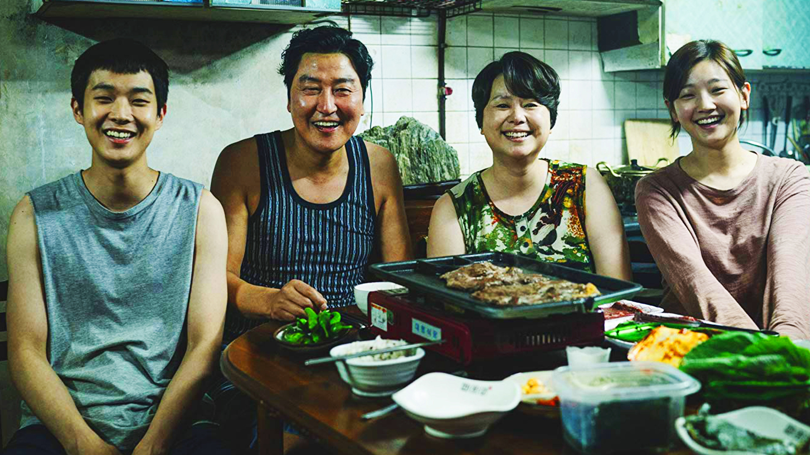
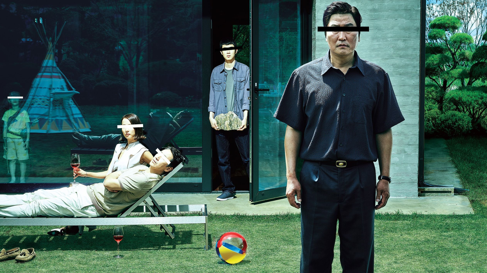
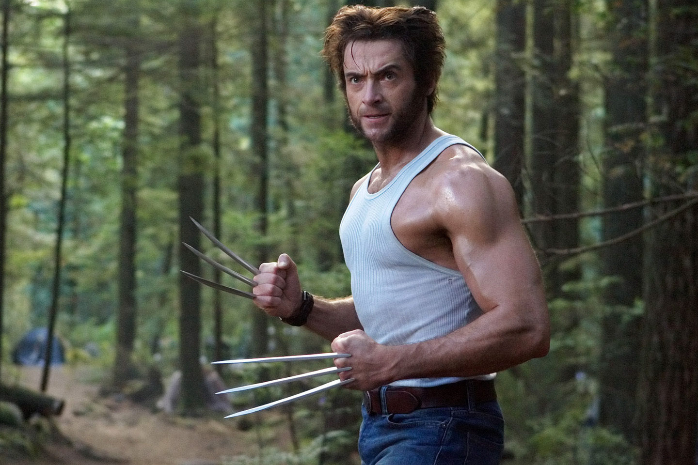
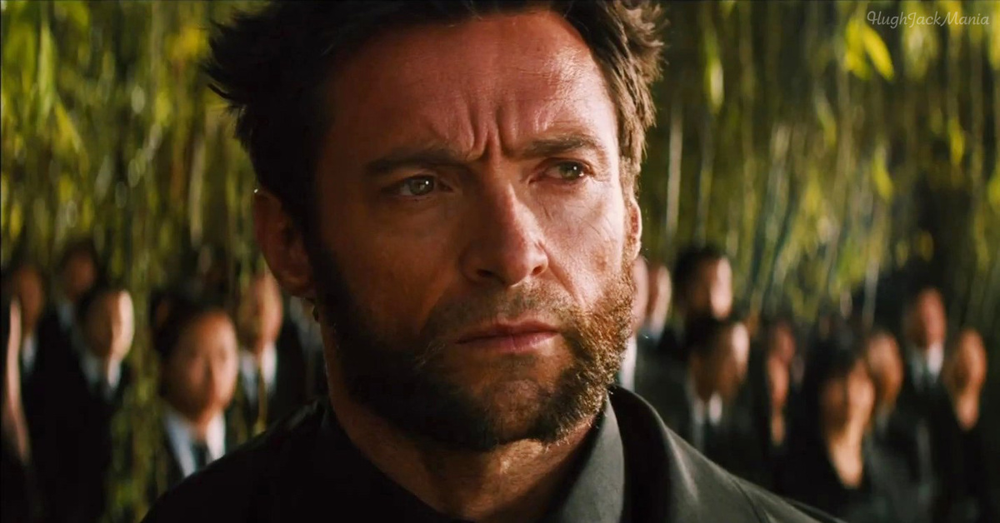
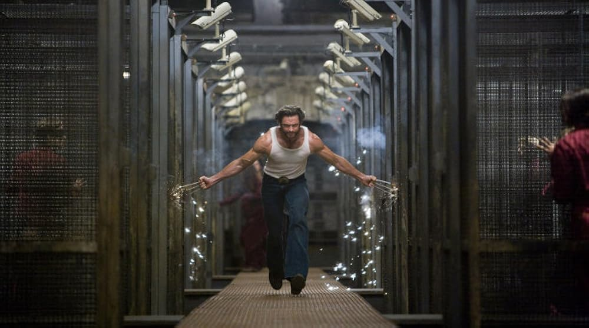
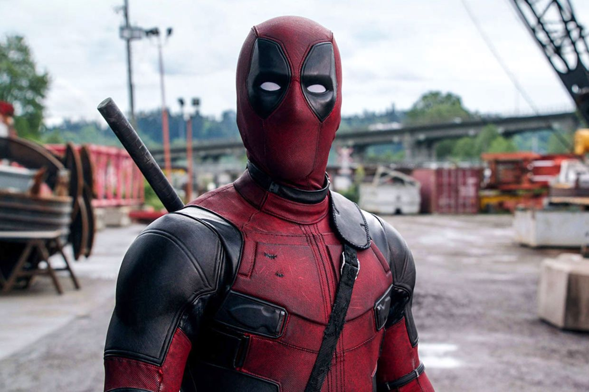
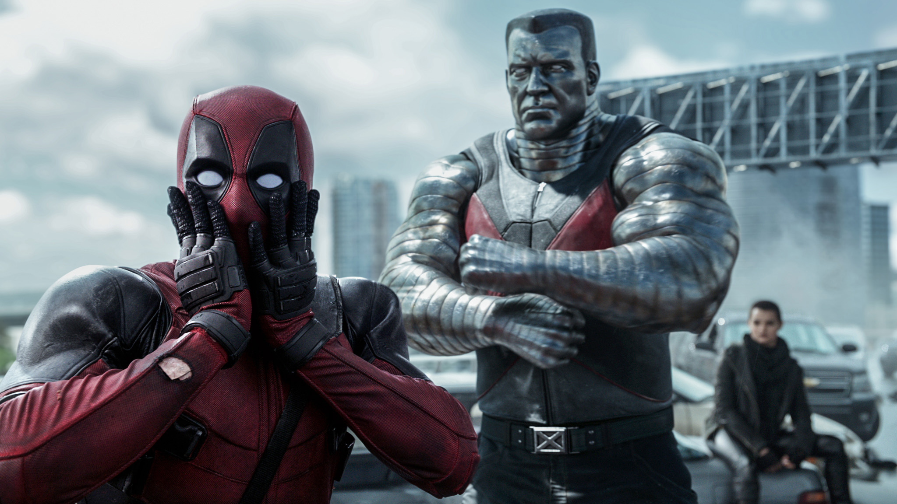
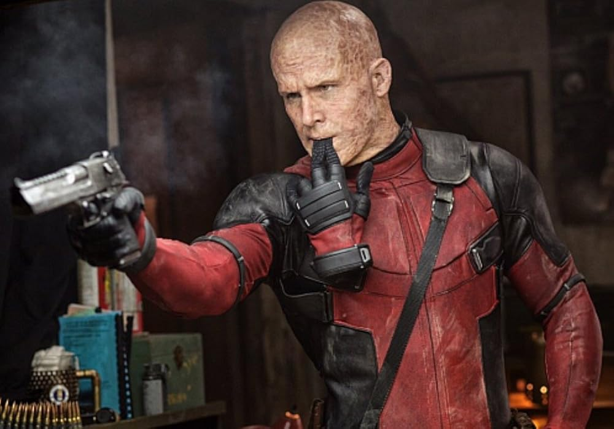

Мои любимые фильмы
Паразиты
Краткое содержание фильма
Обычное корейское семейство Кимов жизнь не балует. Приходится жить в сыром грязном полуподвале, воровать интернет у соседей и перебиваться случайными подработками. Однажды друг сына семейства, уезжая на стажировку за границу, предлагает тому заменить его и поработать репетитором у старшеклассницы в богатой семье Пак. Подделав диплом о высшем образовании, парень отправляется в шикарный дизайнерский особняк и производит на хозяйку дома хорошее впечатление. Тут же ему в голову приходит необычный план по трудоустройству сестры.
Кадры из фильма
 О фильме
| Год | 2014 |
| Жанр | Драма, преступление |
| Страна | Южная Корея |
| Режиссёр | Пон Джун-хо |
Росомаха: Бессмертный
Краткое содержание фильма
Сериал рассказывает о приключениях братьев Сэма и Дина Винчестеров, которые путешествуют по Соединённым Штатам на чёрном автомобиле Chevrolet Impala 1967 года, расследуют паранормальные явления, многие из которых основаны на американских городских легендах и фольклоре >, и сражаются с порождениями зла, такими как демоны и призраки.
Кадры из фильма
  О фильме
| Год | 2013 |
| Жанр | Фантастика, боевик |
| Страна | США, Великобритания |
| Режиссёр | США, Великобритания |
Дедпул
Краткое содержание фильма
Уэйд Уилсон — наёмник. Будучи побочным продуктом программы вооружённых сил под названием «Оружие X», Уилсон приобрёл невероятную силу, проворство и способность к исцелению.
Но страшной цено
й: его клеточная структура постоянно меняется, а здравомыслие сомнительно. Всё, чего хочет Уилсон, — держаться на плаву в социальной выгребной яме. Но течение в ней слишком быстрое.Кадры из фильма
  О фильме
| Год | 2016 |
| Жанр | Боевик, комедия |
| Страна | США |
| Режиссёр | Тим Миллер |